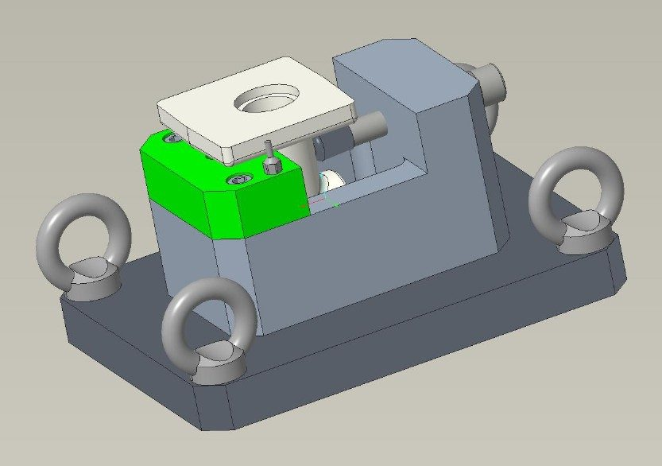

Montage d'usinage pour une pièce de fonderie
Concevoir le support qui tient une pièce métallique pendant son usinage : solide, précis, et peu coûteux. Un projet de conception, resté au stade de l'étude.
Contexte
Une pièce de fonderie à usiner en série
Avant d'être usinée, une pièce doit être tenue fermement sur la machine : c'est le rôle du montage d'usinage. Ici, la pièce était un brut de fonderie, c'est-à-dire sortie d'un moule : ses surfaces sont irrégulières, donc difficiles à utiliser comme points d'appui. Sans montage adapté, impossible de la positionner deux fois exactement de la même façon.

Cahier des charges
Ce qui était attendu
- Assurer une mise en position répétable : la pièce doit se placer toujours au même endroit, malgré ses surfaces irrégulières.
- Être robuste : tenir la pièce sans qu'elle bouge ni se déforme sous les efforts de coupe, la force exercée par l'outil qui usine.
- Rester économique : un coût cohérent avec le nombre de pièces à produire.
- Être conçu sur Creo Parametric.
Ce que j'ai fait
Un montage complet, conçu sur Creo
Le montage a été étudié et dessiné dans son intégralité, mais n'a pas été fabriqué : le projet s'est arrêté au stade de la conception.
J'ai conçu l'ensemble
J'ai dessiné le montage complet en 3D sur le logiciel Creo, de la plaque de base au support qui reçoit la pièce.
J'ai dimensionné pour la rigidité
J'ai concentré la matière là où elle reprend les efforts de coupe, pour garantir la précision sans alourdir inutilement le montage.
J'ai pensé à l'atelier
L'ensemble étant lourd, j'ai prévu quatre anneaux de levage pour le déplacer et l'installer sur la machine sans risque pour les opérateurs.
Envie d'en savoir plus ?
Découvrez mes autres réalisations, ou contactez-moi directement.